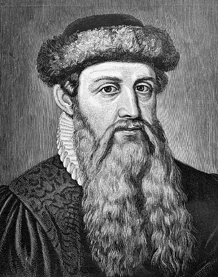

Johannes Gensfleisch zur Laden zum Gutenberg (/ˈɡuːtənbɜːrɡ/;[1] c. 1400[2] – February 3, 1468) was a German inventor, printer, publisher, and goldsmith who introduced printing to Europe with his mechanical movable-type printing press. His work started the Printing Revolution in Europe and is regarded as a milestone of the second millennium, ushering in the modern period of human history. It played a key role in the development of the Renaissance, Reformation, Age of Enlightenment, and Scientific Revolution, as well as laying the material basis for the modern knowledge-based economy and the spread of learning to the masses.[3][4][5][6]
Gutenberg was born in the German city of Mainz, Rhine-Main area, the youngest son of the patrician merchant Friele Gensfleisch zur Laden, and his second wife, Else Wyrich, who was the daughter of a shopkeeper. It is assumed that he was baptized in the area close to his birthplace of St. Christoph.[16] According to some accounts, Friele was a goldsmith for the bishop at Mainz, but most likely, he was involved in the cloth trade.[17] Gutenberg's year of birth is not precisely known, but it was sometime between the years of 1394 and 1404. In the 1890s the city of Mainz declared his official and symbolic date of birth to be June 24, 1400.[18]
Around 1439, Gutenberg was involved in a financial misadventure making polished metal mirrors (which were believed to capture holy light from religious relics) for sale to pilgrims to Aachen: in 1439 the city was planning to exhibit its collection of relics from Emperor Charlemagne but the event was delayed by one year due to a severe flood and the capital already spent could not be repaid.